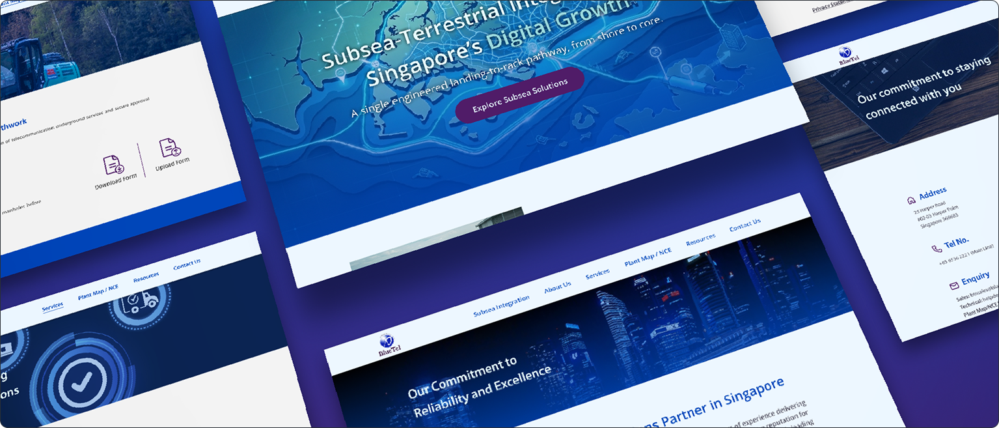
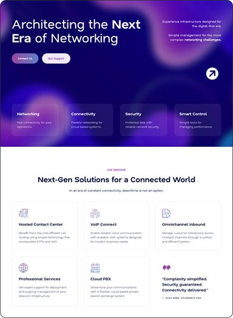
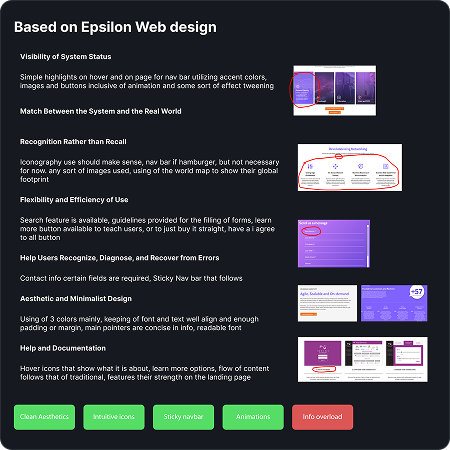
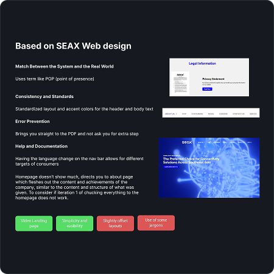
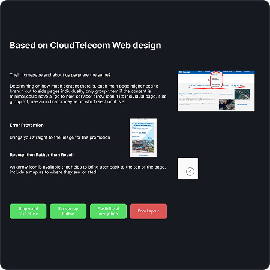
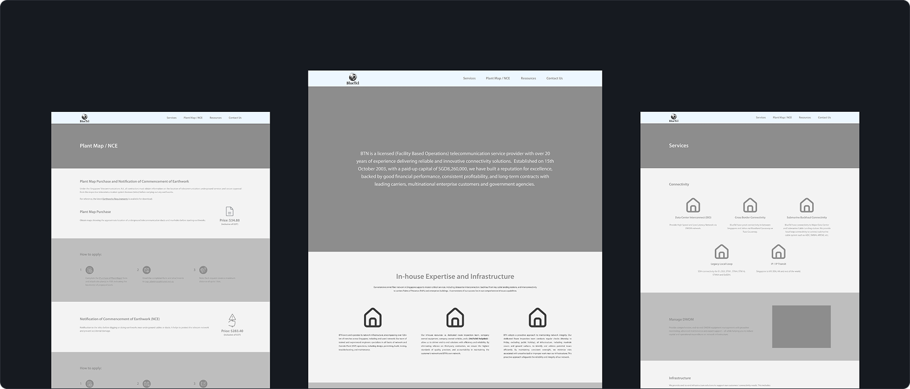
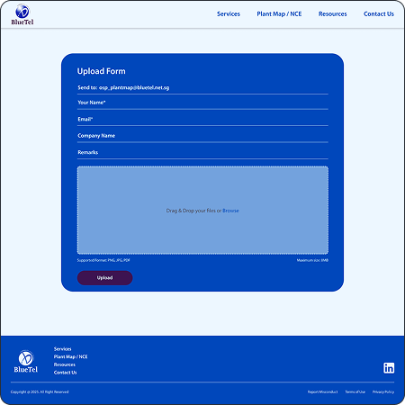
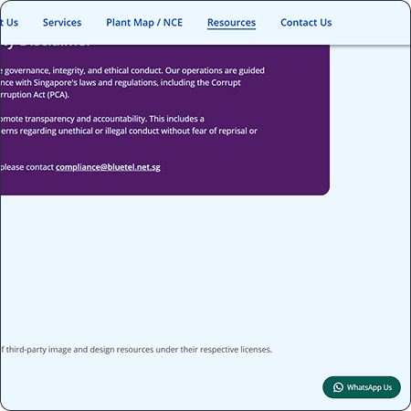
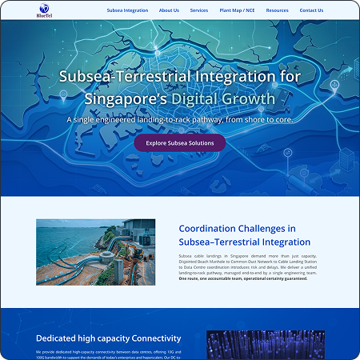
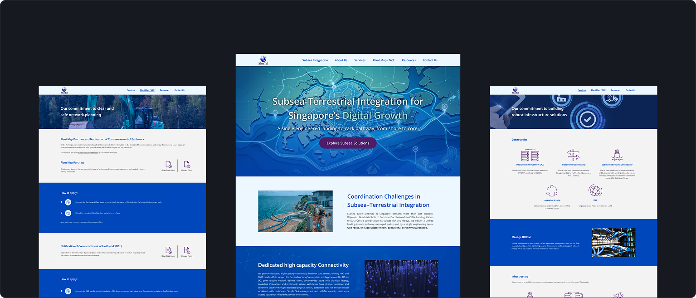

This project was completed during my internship at BlueTel Networks, where I was tasked with designing and building their website from scratch. The goal was to improve how the company's services and strengths are presented, as the existing website was not clear or easy to use. The website is designed for B2B consumers, mainly businesses and professionals looking for telecom and infrastructure solutions.

Telecommunications websites are often difficult to navigate due to complex service offerings and heavy use of technical jargon. This makes it challenging for users, especially first-time or exploratory users to understand services and make informed decisions.
For this company, the issue was that information was not clearly structured, key capabilities were not effectively communicated, and users lacked a clear understanding of the company's value proposition.
The goal of this project was to simplify complex information into clear, easy to understand content, while improving the overall structure and navigation of the site. At the same time, the website needed to better communicate the company's strengths, its flexibility, and in-house capabilities while positioning it beyond a traditional telecom provider.

A heuristic evaluation was conducted on both competitor telecom websites and the existing company site. This assessed key usability issues such as unclear navigation, inconsistent layouts, and weak information hierarchy.
Based on these findings, several design priorities were defined to improve clarity and usability. The focus was on simplifying how users scan information and making key services easier to access.



Key improvements explored included:
These insights were translated into a revised site structure through a sitemap, followed by low-fidelity wireframes to define layout hierarchy, content placement, and user flow. A style guide was then created to ensure visual consistency across typography, spacing, and UI elements.

This was scaled to high fidelity mockups to visualise the final interface. Multiple user testing were conducted and iterations were made.
Iteration 1 - Document Submission Capability
The form system was expanded to support document uploads in addition to text-based submissions, allowing users to submit files directly for service-related requests.
Iteration 2 - Direct User Communications
A WhatsApp contact option was introduced, enabling users to quickly reach the company through a familiar and accessible communication channel.
Iteration 3 - Homepage & Content Restructure
The homepage was redesigned to better highlight key services and new offerings. At the same time, content was reorganised with a dedicated About Us page to improve clarity and structure.



The final website brings together improved structure, updated features, and a consistent visual system into a cohesive and responsive experience across desktop and mobile.
Key pages were designed to clearly communicate the company's services, strengths, and offerings. The layout prioritises clarity and hierarchy, making it easier for users to scan and understand information.
Core interactions were refined to support usability, including streamlined navigation, improved content structure, and direct access to key actions such as enquiries and document submissions.
Interaction Highlights:

The final website shipped the company's services and capabilities are presented making it easier for users to understand offerings and recognise key information. Navigation improvements and a restructured homepage architecture helped improve overall clarity and engagement.
Based on Google Analytics, the site has seen consistent user traffic, with users actively engaging in features such as WhatsApp communications, document submissions, and service related document downloads. This project also reinforced my understanding of balancing user needs, business goals and iterative improvements in a real-world environment.